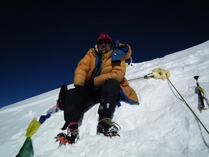

A Lhoce a Föld negyedik legmagasabb hegycsúcsa Kína (Tibet) és Nepál határán. A Himalája nyolcezres csúcsai közül ennek van a legalacsonyabb topográfiai kiemelkedése (610 m), s emiatt gyakran hívják a „legkisebb” nyolcezresnek is. A hegy óriási déli oldala (fala) egyben a világon is egyedülálló méretekkel bír: 2,25 km-es szakaszon teljesen sík felületű, ami a mászást rendkívül megnehezíti (amennyiben valaki azzal próbálkozik). Sok sikertelen kísérlet színhelye volt a félelmetes déli oldal (s néhány szerencsétlenség is itt történt); de nagyon kevés siker köthető ide: közülük egy nem ellenőrzött mászás Tomo Česen nevéhez fűződik. A csúcs egy ideig id. Lóczy Lajos híres magyar természettudós nevét viselte.
Magyar és külföldi kísérletek
Mászások története
Az 1955-ös nemzetközi Himalája-expedíció kísérelte meg a Lhoce csúcsának meghódítását. A vállalkozás vezetője Norman Dyhrenfurth volt, tagjai között két osztrák térképész (Erwin Schneider, Ernst Senn), két svájci hegymászó (Bruno Spirig, Arthur Spöhel), valamint három amerikai mászó volt (Fred Beckey, George Bell és Richard McGowan). 200 serpa kísérte őket, de szeptember és október fordulópontján 8100 m magasságban megálltak, s a rendkívüli hideg és egyéb problémák miatt visszafordultak. Az expedíció egyik nagy érdeme, hogy elkészítették az első térképet a Mount Everestről és környékéről (1:50 000), valamint néhány rövidfilm készült kisebb csúcsok megmászásáról, s a helyi kultúráról is

Erőss Zsolt a Lhotse csúcsán
Lenyűgöző magyar csúcstámadás
Erőss Zsolt 2011-ben, balesete és amputációja után, az első magyar hegymászóként jutott fel a 8516 méter magas Lhoce csúcsára, amit különösen nagy teljesítményként tartanak számon. Ez az expedíció a „tiszta mászás” hagyományait követte, ami azt jelentette, hogy nem használtak oxigént, serpákat, és minimalizálták a felszerelést. Erőss a sérülése miatt protézissel mászott, és a nehézségek ellenére végig sikeresen alkalmazkodott a speciális igényekhez, például a protézis gyakori tisztításához. Az expedíciónak komoly kihívásokat kellett leküzdenie, és Erőss számára különösen nagy jelentőségű volt ez a sikeres visszatérés a nyolcezres hegyek világába a súlyos balesete után